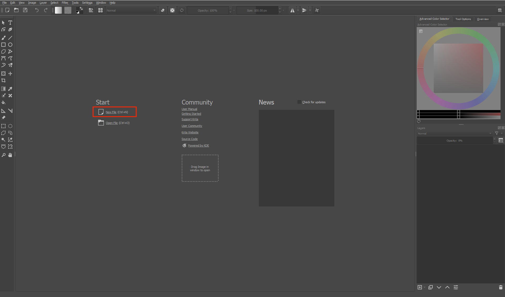
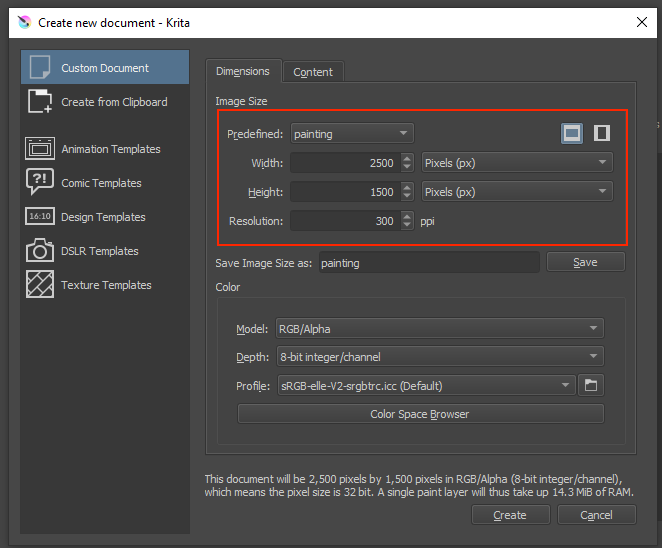

Before you start painting, the first thing you need to do is to set up a document. It's pretty simple, so let's get started!
When you first open Krita, you will be greeted by a screen with the option to create a new file or open a file on the left. To create a new painting, click the new file button or press Ctrl + N (or Cmd + N if you're on a Mac).
You will see a popup that allows you to change the size and resolution of your document. I like to use a width of 2500px and a height of 1500px, along with a resolution of 300. You can set these values to whatever you want, but larger dimensions give you more pixels to work with so that your painting won't look blurry if you zoom in too far.
Additionally, if you plan on printing your painting later on, you should set the resolution to 300ppi. Otherwise, 72 ppi is fine if you will only be viewing your painting on a screen.
